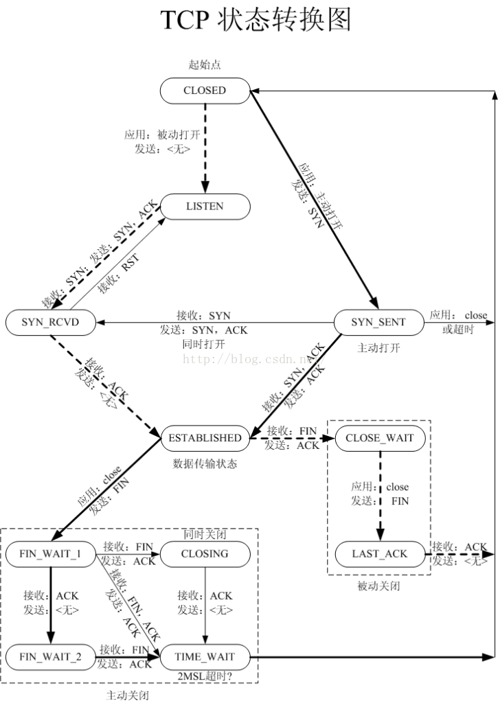

- net.ipv4.tcp_syncookies = 1
- net.ipv4.tcp_max_syn_backlog = 8192
- net.ipv4.tcp_fin_timeout = 30
- net.ipv4.tcp_max_tw_buckets = 5000
- net.ipv4.tcp_keepalive_time = 300
- net.ipv4.tcp_keepalive_probes = 3
- net.ipv4.tcp_keepalive_time = 30
-
-
- net.ipv4.tcp_tw_reuse = 1
- net.ipv4.tcp_tw_recycle = 0
-
- # vm.swappiness=0
- ## 内核倾向于保留directory和inode cache
- vm.vfs_cache_pressure=30
- ## 禁止“沿途MTU发现”
- net.ipv4.ip_no_pmtu_disc=1
-
- net.ipv4.ip_local_port_range = 1024 65535
- # Increase number of incoming connections
-
- ## 定义了系统中每一个端口最大的监听队列的长度
- net.core.somaxconn = 4096
- # Increase number of incoming connections backlog
-
- ##每个网络接口接收数据包的速率比内核处理这些包的速率快时，允许送到队列的数据包的最大数目
- net.core.netdev_max_backlog = 4096
- # allow testing with buffers up to 64MB
-
- ##接收套接字缓冲区大小的最大值(以字节为单位)
- net.core.rmem_max = 67108864
- ##发送套接字缓冲区大小的最大值(以字节为单位)
- net.core.wmem_max = 67108864
- # increase Linux autotuning TCP buffer limit to 32MB
- ## TCP接收缓冲区，3个字段分别是min，default，max。
- net.ipv4.tcp_rmem = 4096 87380 33554432
- ## TCP发送缓冲区
- net.ipv4.tcp_wmem = 4096 65536 33554432
- # recommended default congestion control is htcp
- net.ipv4.tcp_congestion_control=htcp
- # recommended for hosts with jumbo frames enabled
- #net.ipv4.tcp_mtu_probing=1
- # recommended for CentOS7/Debian8 hosts
- net.core.default_qdisc = fq
-
-
- net.ipv4.tcp_syncookies = 1
- 表示开启SYN Cookies。当出现SYN等待队列溢出时，启用cookies来处理，可防范少量SYN攻击，默认为0，表示关闭；
- net.ipv4.tcp_max_syn_backlog = 8192 表示SYN队列的长度，默认为1024，加大队列长度为8192，可以容纳更多等待连接的网络连接数(tcp_max_syn_backlog>=somaxconn)
- net.ipv4.tcp_fin_timeout = 30
- 表示如果套接字由本端要求关闭，这个参数决定了它保持在FIN-WAIT-2状态的时间
- net.ipv4.tcp_max_tw_buckets = 5000 表示系统同时保持TIME_WAIT套接字的最大数量，如果超过这个数字，TIME_WAIT套接字将立刻被清除并打印警告信息。
-
- tcp_keepalive_time ：INTEGER
- 默认值是7200(2小时)
- 当keepalive打开的情况下，TCP发送keepalive消息的频率。(由于目前网络攻击等因素,造成了利用这个进行的攻击很频繁,曾经也有cu的朋友提到过,说如果2边建立了连接,然后不发送任何数据或者rst/fin消息,那么持续的时间是不是就是2小时,空连接攻击? tcp_keepalive_time就是预防此情形的.)
- tcp_keepalive_probes：INTEGER
- 默认值是9
- TCP发送keepalive探测以确定该连接已经断开的次数。(注意:保持连接仅在SO_KEEPALIVE套接字选项被打开是才发送.次数默认不需要修改,当然根据情形也可以适当地缩短此值.设置为5比较合适)
- tcp_keepalive_intvl：INTEGER
- 默认值为75
- 探测消息发送的频率，乘以tcp_keepalive_probes就得到对于从开始探测以来没有响应的连接杀除的时间。默认值为75秒，也就是没有活动的连接将在大约11分钟以后将被丢弃。(对于普通应用来说,这个值有一些偏大,可以根据需要改小.特别是web类服务器需要改小该值,15是个比较合适的值)
-
-
-
- net.ipv4.tcp_tw_reuse=1
- #表示开启重用。允许将TIME-WAIT sockets重新用于新的TCP连接，默认为0，表示关闭；该文件表示是否允许重新应用处于TIME-WAIT状态的socket用于新的TCP连接(这个对快速重启动某些服务,而启动后提示端口已经被使用的情形非常有帮助)
- net.ipv4.tcp_tw_recycle = 0
- 如果服务器身处NAT环境，安全起见，通常要禁止tcp_tw_recycle，如果nat下，开启了tcp_tw_recycle，可能会导致部分用户无法连接服务器的情况：在nat模式下（服务器一般会用到dnat，用户一般会用到snat），nat设备（or服务器）会修改目的ip和源ip，以屏蔽内部信息。
-
- sysctl net.ipv4.tcp_available_congestion_control
- 如果没有下文提到的htcp,hybla算法，你可以尝试通过modprobe启用模块：
- /sbin/modprobe tcp_htcp
- /sbin/modprobe tcp_hybla
-
- tcp_mtu_probing (integer; default: 0; since Linux 2.6.17):
- This parameter controls TCP Packetization-Layer Path MTU Discovery. The following values may be assigned to the file:
- 0 Disabled
- 1 Disabled by default, enabled when an ICMP black hole detected
- 2 Always enabled, use initial MSS of tcp_base_mss.